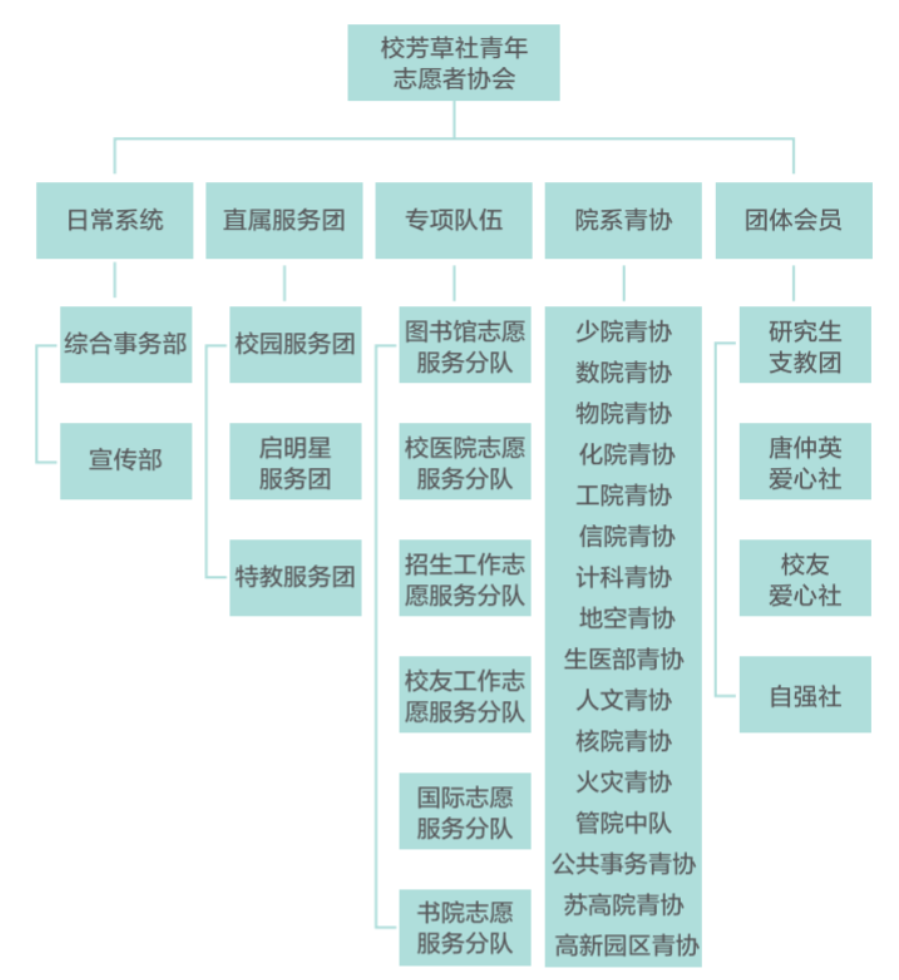

第二章 组织架构和职能
芳草社的组织和人事架构是什么？
目前芳草社由日常系统、直属服务团、专项队伍、院系青协和团体会员五大部分组成，具体的组织架构如下。

芳草社不设学生会长，设学生副会长4~5名、各下属部门主要学生负责人若干名，每年面向全校学生公开选聘。
芳草社下设办公室，成员由团委专职工作人员和学生组成。
芳草社会长团的职责是什么？
-
营造良好的校园志愿服务氛围，培养科大青年的奉献精神和志愿服务能力。
-
协调校内青年志愿服务力量开展志愿服务活动，为校内外需要帮助的个人和组织提供力所能及的志愿服务。
-
引导志愿者参加青年网络文明志愿行动，主动弘扬正能量，增强网络文明素养，构建清朗网络空间。
-
开展与校外青年志愿者组织和个人的交流。
芳草社有哪些老师？
指导老师：宋怡
团委负责老师：钱悦菡（办公地点：东区大礼堂206办公室）
芳草社日常办公时间、地点及相关信息？
办公地点：东区大礼堂205办公室
办公时间：工作日下午17:00至18:00值班办公
芳草社下属的各组织有哪些职责？
日常系统
综合事务部
TBD
宣传部
TBD
直属服务团
启明星服务团
TBD
特教服务团
TBD
校园服务团
TBD
专项队伍
图书馆志愿服务分队
TBD
校医院志愿服务分队
TBD
招生工作志愿服务分队
TBD
国际志愿服务分队
TBD
书院志愿服务分队
TBD
院系青协
TBD
团体会员
TBD